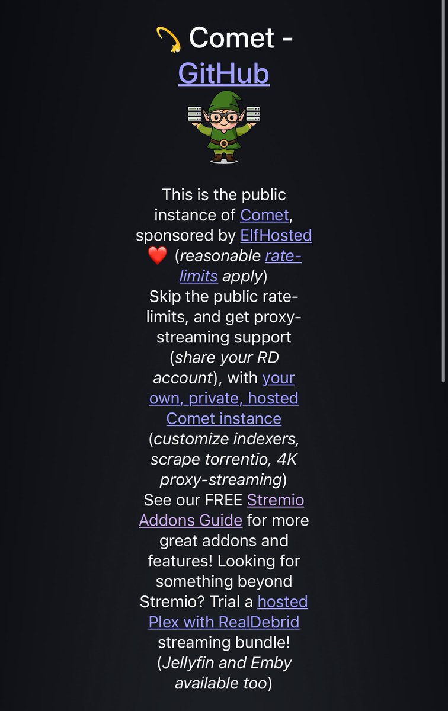
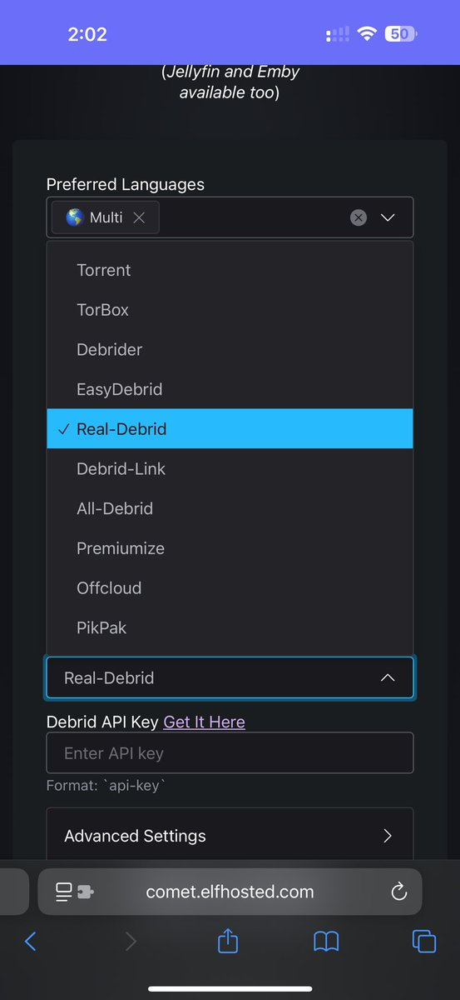
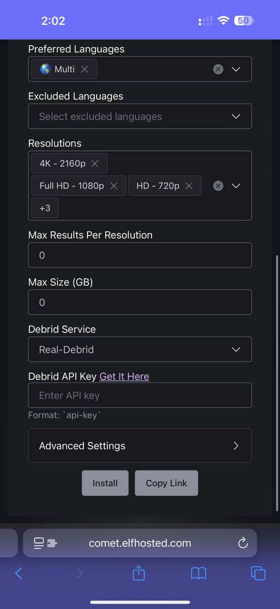
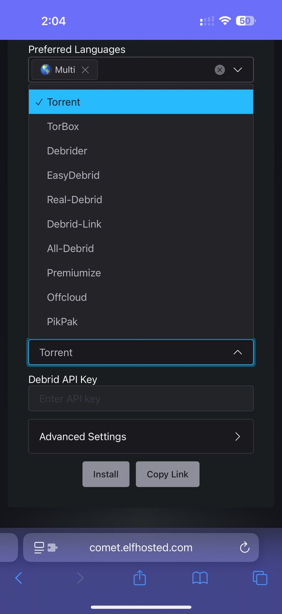
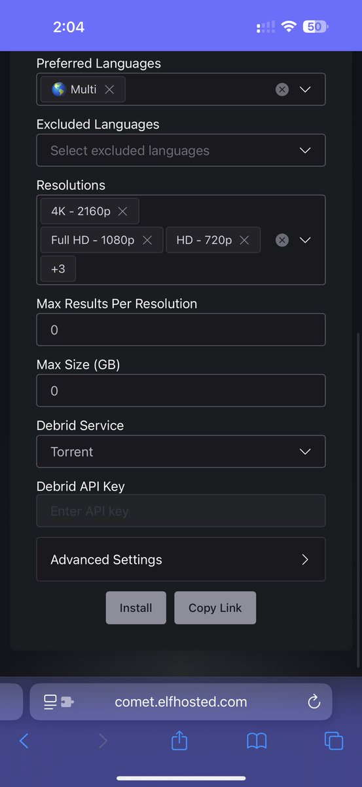

شرح تثبيت إضافة Comet في stremio 📺
تعتبر إضافة Comet بديلاً ممتازاً لإضافات MediaFusion و Torrentio، وتوفر مصادر مشاهدة موثوقة.

رابط الإضافة: comet.elfhosted.com
1 | لمستخدمي الخدمات المدفوعة (Debrid)
إذا كنت مشتركاً في خدمة Real-Debrid أو غيرها، اتبع الخطوات التالية:
- أول خيار (اللغة): قم بإضافة "multi".
- انتقل لخيار Debrid Service واختر الخدمة التي تشترك فيها، ثم أضف رقم الـ API الخاص بك.
- اضغط على install.


2 | لمستخدمي الخدمة المجانية (التورنت العام)
إذا كنت تريد العمل بدون اشتراك مدفوع:
- أول خيار (اللغة): قم بإضافة "multi".
- تأكد أن خيار Debrid Service مضبوط على كلمة "Torrent".
- اضغط على install.
ملاحظة هامة: التورنت العام لا يعمل على تطبيق الايفون في جميع الإضافات.

